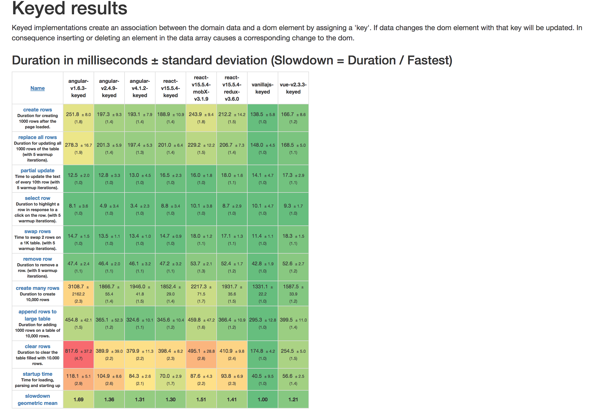
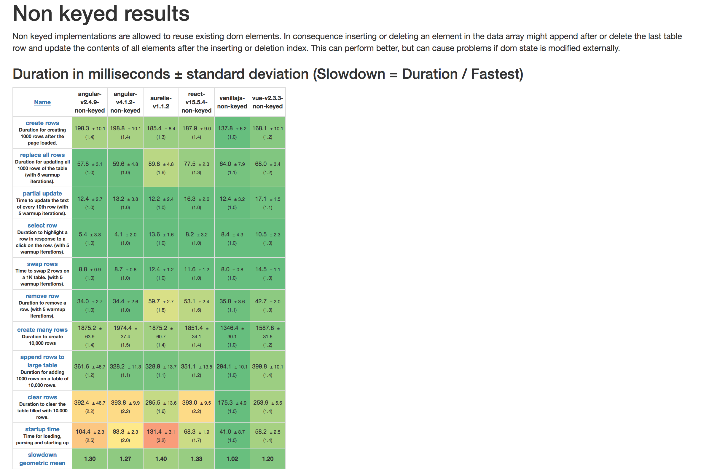
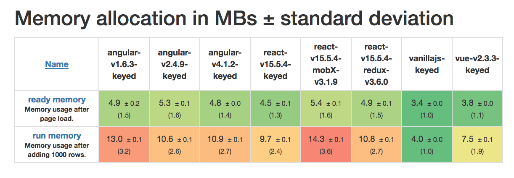

Table of Contents
1 Frameworks
https://medium.com/unicorn-supplies/angular-vs-react-vs-vue-a-2017-comparison-c5c52d620176 https://www.youtube.com/watch?v=z6hQqgvGI4Y https://about.gitlab.com/2016/10/20/why-we-chose-vue/ https://about.gitlab.com/2017/11/09/gitlab-vue-one-year-later/ https://about.gitlab.com/2017/02/06/vue-big-plan/ http://pixeljets.com/blog/why-we-chose-vuejs-over-react/ http://hire.jonasgalvez.com.br/2017/Jun/23/Why-Choose-Vue

1.1 Vue.js
https://vuejs.org/ https://github.com/vuejs/awesome-vue The Progressive JavaScript Framework
- HTML, CSS and JavaScript? start building things in no time!
- Versatile: scales between a library and a full-featured framework.
- Performant:
- 20KB min+gzip Runtime
- Blazing Fast Virtual DOM
- Minimal Optimization Efforts
- shadow dom
1.1.1 Notizen
Vue is pretty easy to learn. Companies switch to Vue because its seems to be much easier for junior developers
Meanwhile, Angular and React have their own way of doing things. They may get in your way, because you need to adjust your practices to make things work their way. That can be a detriment because you are less flexible, and there is a steeper learning curve. It could also be a benefit because you are forced to learn the right concepts while learning the technology. With Vue, you can do the things the old-Javascript-fashioned way. This can be easier in the beginning, but could become a problem in the long-run if things are not done properly.
When it comes to debugging, it’s a plus that React and Vue have less magic. The hunt for bugs is easier because there are fewer places to look and the stack traces have better distinctions between their own code and that of the libraries.
1.2 Angular2
https://angular.io/ One framework. Mobile & desktop.
- web, mobile web, native mobile and native desktop
- SPEED & PERFORMANCE
1.2.1 Notizen
There is definitely a steep learning curve for Angular.
loved by 52% of surveyed developers
The good thing about the Angular framework is that a new Angular 2 developer from another company will quickly familiarize themselves with all the requisite conventions. React projects are each different in terms of architectural decisions, and developers need to get familiar with the particular project setup.
1.3 aureliajs
http://aurelia.io/ Aurelia is a JavaScript client framework for web, mobile and desktop that leverages simple conventions to empower your creativity.
| aurelia/framework | Watch 549 | Star 10,329 | Fork 599 |
2 Libraries
with great flexibility comes great responsibility
2.1 React
https://reactjs.org/ A JavaScript library for building user interfaces
2.1.1 Pros
- shadow dom
- integrationen mit hooks
- React Native
- Component-Based (encapsulated)
2.1.2 Notizen
loved by 67% of surveyed developers
user “pier25” notes on Reddit that React makes sense if you are working for Facebook, where everyone is a superhero developer.
things they have done in React would have been better written in Vue. If you are an unexperienced Javascript developer — or if you worked mainly with jQuery in the last decade
2.2 jQuery
http://jquery.com/ dom & ajax
- Lightweight Footprint 32kB
- CSS3 Compliant
- Cross-Browser
2.3 Charts
Aug 28, 2017
#Fakenews: https://medium.com/@localvoid/how-to-win-in-web-framework-benchmarks-8bc31af76ce7




2.4 Entscheidungsmatrix
gh star history: http://www.timqian.com/star-history/#facebook/react&angular/angular&vuejs/vue
| Vue.js | React | Angular2 | jQuery | vanilla.js | |
|---|---|---|---|---|---|
| Watch | 4,302 | 5,323 | 2,839 | 3,535 | |
| Created | 29.6.13 | 24.5.13 | 6.1.10 | 3.4.09 | |
| Star | 78,885 | 84,995 | 31,691 | 47,620 | |
| Fork | 11,666 | 16,092 | 7,867 | 14,690 | 14,069 |
| contributors | 120 | 1000 | 463 | 5 | |
| Team | 16 | ¯\(ツ)_/¯ | 36 | 9 | |
| Vendor | Vue Technology LLC | jQuery Foundation | |||
| Lizenz | MIT | MIT | MIT | MIT | |
| lang | js ES5 or ES6 | js ES6, jsx | TypeScript | js | |
| loved by so* | ¯\(ツ)_/¯ | 67 % | 0,52 % | - | |
| dev Zeit | x | ||||
| Ökosystem | x | ||||
| Integrationen | x | ||||
| Zukunft | x | x | x | x | x |
| Performance | x | x | x | x | x |
| Schwerpunkt | x |
3 conclusion
What should I choose?
| like really clean code | Vue |
| deadlines | Vue |
| want the easiest learning curve | Vue |
| want the most lightweight framework | Vue |
| want separation of concerns in one file | Vue |
| are working alone or have a small team | Vue (or React) |
| are working alone or have a small team | Vue (or React) |
| suspect fb & google | Vue |
| work at Google | Angular |
| love TypeScript | Angular (or React) |
| love object-orientated-programming (OOP) | Angular |
| need guidance, structure and a helping hand | Angular |
| work at Facebook | React |
| like flexibility | React |
| love big ecosystems | React |
| like choosing among dozens of packages | React |
| love JS & the “everything-is-Javascript-approach” | React |
| app tends to get really large | Angular (or React) |
| want to build an app with react-native | React |
| want to have a lot of developers in the pool | Angular or React |
| work with designers and need clean HTML files | Angular or Vue |
| like Vue but are afraid of the limited ecosystem | React |
So, have you made your decision?

4 TLDR:
4.1 Vue.js
- gute Software
- Etwicklungszeit
- Lernkurve: HTML, CSS and JavaScript? start building things in no time!
- mächtig (reicht für Gitlab)
- flexibel: scales between a library and a full-featured framework.
- performant genug
- SPA
- zukunftssicher
- komponentenbasiert
- erfüllt die Checkliste
4.2 warum nicht…
4.2.1 Angular
- Angular1 = legacy
- Angular2 = TypeScript
- Lernkurve
- zu enterprise
- anängig von Microsoft & Google
4.2.2 React
- Lernkurve
- kein Framework
- JSX
- anhängig von Facebook
4.2.3 jQuery
- kein Framework
- Lernkurve
4.2.4 aurelia
- wie Vuejs nur nicht so beliebt